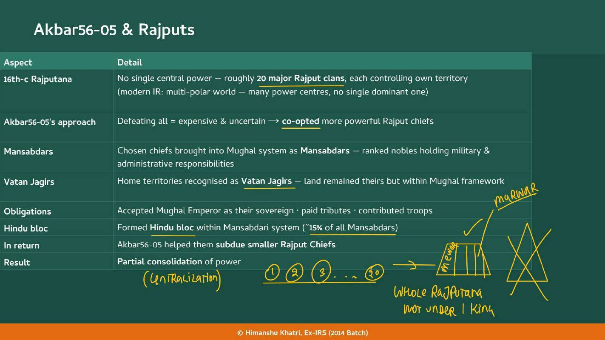
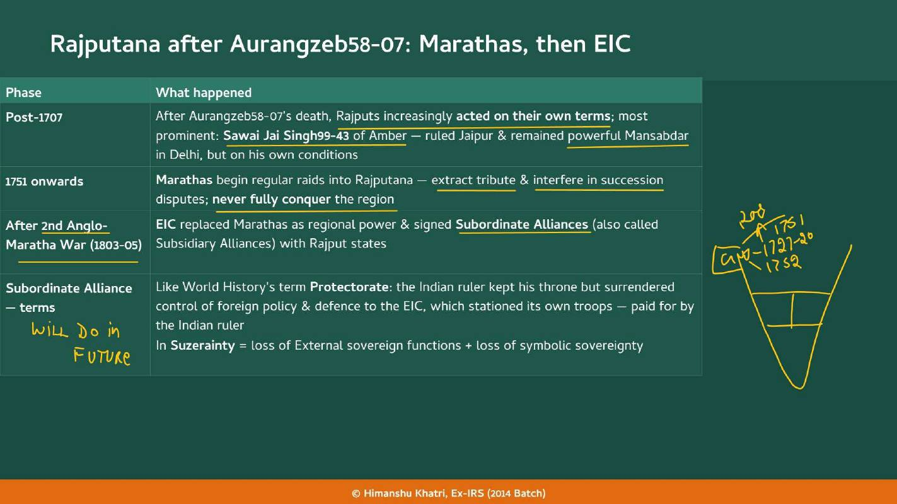
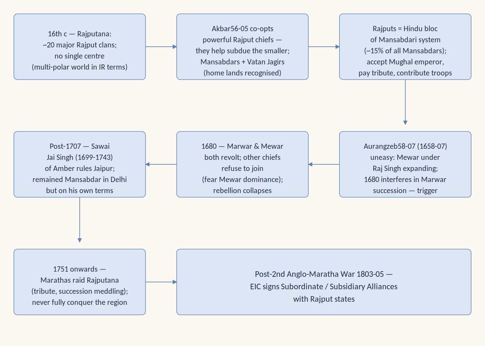
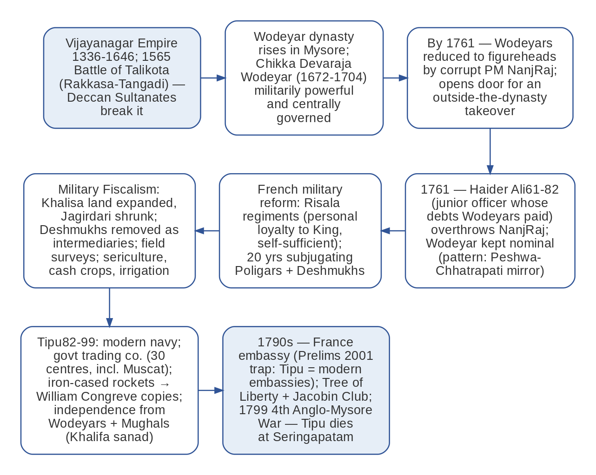

Chapter 3: Successor States
The third class of regional States (Rajputs, Mysore, Travancore) and the Carnatic, Gingee and Vijayanagar background.
| Year | Paper | Topic | Answer |
|---|---|---|---|
| 2001 | Prelims | Tipu Sultan's modern embassies | (D) Tipu Sultan |
| 2017 | Mains | Fragmented polity in mid-18th century | |
| 2014 | Mains | Why were so many empire-shaking battles fought at Panipat? | |
Block of Chapters 2 to 7: less important. Hold Jaipur, the Jantar Mantars and Tipu 82-99's embassies; Colachel 1741 is tested next door in Chapter 8.
Read it like a film first. Then go to the notes: every fact below is expanded there.
Story spine: None of these three was ruled by the Mughals in the middle path, and each built State capacity in its own way: the Rajputs by bargaining, Travancore by trade, Mysore by a war machine; each ended up under EIC pressure.
| Character | Role in the story | Hook |
|---|---|---|
| Akbar 56-05 | Co-opted the powerful Rajput chiefs as Mansabdars | The Bargainer |
| Raj Singh | Mewar's expanding ruler | The Mewar Expander |
| Aurangzeb 58-07 | Uneasy emperor who interfered in Marwar in 1680 | The Uneasy Emperor |
| Sawai Jai Singh 99-43 | Amber ruler: Mansabdar, state-builder, astronomer, town planner | The Four-Hat Raja |
| Vidyadhar Bhattacharya | Designer of Jaipur, 1727 | The Planner |
| Muhammad Shah 19-48 | Emperor to whom the Zij-i-Muhammad Shahi was dedicated | The Shah of the Zij |
| Marthanda Varma 29-58 | Built Travancore on trade; crushed the Dutch at Colachel | The Trade-State Builder |
| Rama Varma 58-98 | Art and scholarship, declining military; lost Malabar | The Scholar King |
| Velu Thampi Dalawa | Prime Minister who issued the Kundara Proclamation, 1809 | The Last Stand |
| Chikka Devaraja 72-04 Wodeyar | Made Mysore militarily powerful | The Strong Wodeyar |
| NanjRaj | Corrupt Prime Minister who made the Wodeyars puppets | The Corrupt PM |
| Haider Ali 61-82 | Junior officer who took power in 1761; Risalas and Military Fiscalism | The Strongman |
| Tipu 82-99 | Trading company, rockets, independence, embassies, Jacobin Club | The Modernising Sultan |
| Napoleon | Attacked Egypt in 1798; exchanged letters with Tipu but sent no help | The Absent Ally |
| Key term | In plain words |
|---|---|
| Already Autonomous State | A State where even a powerful Mughal did not rule |
| Multi-polar | Many power centres, no single dominant one (16th-century Rajputana) |
| Vatan Jagir | A chief's home territory, recognised as his own within the Mughal framework |
| Subordinate Alliance | Like a protectorate: throne kept, foreign policy and defence surrendered, EIC troops paid for by the ruler |
| Sawai | A title: 1.25 times more able than any contemporary ruler |
| Zij | An astronomical table; the Zij-i-Muhammad Shahi (1733) corrected the older ones |
| Dalawa / Dewan | PM and chief of the armed forces / head of all administration under the British, without the military |
| Risala | A self-sufficient regiment whose commander the King appoints |
| Poligar | A local chief or landlord with land, temple wealth and armed men |
| Deshmukh | A revenue collector who functioned like a primary zamindar |
| Military Fiscalism | Systematic generation of State wealth as a foundation for military power |
| Sanad | An official order; Tipu 82-99 asked the Khalifa for one |
Remember it as The Rajputs bargained, Travancore built on trade, Mysore built a war machine and overreached; Tipu 82-99 sent the embassies (Prelims 2001).
| Year and paper | What was asked | The answer or trap | Where in this chapter |
|---|---|---|---|
| Prelims 2001 | Which Indian ruler established embassies in foreign countries on modern lines? | (d) Tipu 82-99 Sultan: embassies in France, Turkey and Egypt, with new coinage and the Mauludi Lunisolar Calendar. The distractors were Haider Ali 61-82, Mir Qasim 60-63 and Shah Alam II 60-06 | Mysore: Tipu 82-99's innovations |

| Aspect | What happened |
|---|---|
| 16th-century Rajputana | No single central power; roughly 20 major Rajput clans, each controlling its own territory (in modern IR terms a multi-polar world: many power centres, no single dominant one) |
| Akbar 56-05's approach | Defeating all would be expensive and uncertain, so he co-opted the more powerful Rajput chiefs |
| Mansabdars | The chosen chiefs became ranked nobles with military and administrative responsibilities |
| Vatan Jagirs | Their home territories were recognised as Vatan Jagirs: the land remained theirs but within the Mughal framework |
| Obligations | Accepted the Mughal Emperor as sovereign, paid tributes, contributed troops |
| Hindu bloc | As a group they formed the Hindu bloc within the Mansabdari system (about 15% of all Mansabdars) |
| In return | Akbar 56-05 helped them subdue the smaller Rajput chiefs |
| Result | A partial consolidation of power |


| Aspect | Detail |
|---|---|
| "Sawai" | A title (1.25 times more able than any contemporary ruler) conferred by Aurangzeb 58-07 |
| Four roles at once | Mughal Mansabdar, regional state-builder, astronomer and town planner |
| Subedar | Held the Subedari of Malwa (1729-37) and Agra (Governor) |
| Hurda conference, 1734 | A conference of Rajput rulers at Hurda to forge a united front against the Marathas; it collapsed due to internal Rajput rivalries |
| Treaty of Bhopal | 1738: Malwa annexed by the Marathas (the teacher: Sawai Jai Singh 99-43 = the Mughal Governor of Malwa) |
| Jaipur founded, 1727 | Designed by Vidyadhar Bhattacharya on Vastu Shastra principles, grid-pattern layout; the first planned city of modern India; Sawai Ram Singh painted it pink in 1876 to welcome the Prince of Wales |
| Social reform | Tried to curb dowry and excessive marriage expenditure among Rajputs; limited success |
| Last Yajnas | The last Indian ruler to perform the Ashvamedha and Vajapeya Yajnas: a conscious assertion of Hindu Chakravartin status as Mughal authority collapsed |
| Instrument | Use |
|---|---|
| Samrat Yantra | Sundial for time |
| Jai Prakash Yantra | Celestial mapper |
| Ram Yantra | Altitude meter for the Sun's position |
| Year | Event |
|---|---|
| Since 1663 | The Dutch East India Company's Malabar headquarters at Cochin (central Kerala), captured from the Portuguese |
| 1741 | Battle of Colachel: a landmark in the history of Kerala; Marthanda Varma 29-58's army crushed the Dutch East India Company |
| Effect | Terminal: it permanently ended Dutch political and military ambitions in Kerala, reducing them to mere merchants in Cochin |
| 1759 | Battle of Bedara (also called Battle of Chinsura): the British EIC defeated the Dutch in Bengal, crushing their remaining ambitions in India |
| 1795 | Final expulsion from South Asia by the British (Ceylon / Sri Lanka) |
| Policy | Effect |
|---|---|
| Khalisa land expanded | More revenue went directly to the State treasury |
| Jagirdari minimised | Maximised State income, reducing the nobles' independent economic power |
| Direct collection | Deshmukhs removed as intermediaries; State officials collected taxes and got salaries (far smaller than commissions) |
| Detailed field surveys | Assessed LR by soil fertility, crop type, irrigation access and past production trends; prevented over-assessment |
| Investing in agriculture | Canals repaired and built; cash crops promoted; sericulture introduced |
| Boosted tax collection | More peasant income meant a larger tax base; even enemies admitted Mysore's population was among the most prosperous |

| Feature | Rajputs | Travancore | Mysore |
|---|---|---|---|
| Relation to the Mughals | Co-opted by Akbar 56-05: Mansabdars with Vatan Jagirs; Hindu bloc (15%) | Never part of the Mughal Empire | Part of Vijayanagar, then autonomous under the Wodeyars |
| Key figure | Sawai Jai Singh 99-43 | Marthanda Varma 29-58 | Haider Ali 61-82, Tipu 82-99 |
| Strength | Astronomy, Jaipur, politics on own terms | Trade monopoly, centralised State, Colachel 1741 | Risalas, Military Fiscalism, rockets, trade company |
| End | Subordinate Alliances after 1803-05 | Subsidiary Alliance 1805; revolt 1809 | Four wars; Tipu 82-99 dies 1799 |
| Year | What happened |
|---|---|
| 1336 | Vijayanagar Empire begins (to 1646) |
| 1565 | Battle of Talikota: Deccan Sultanates defeat Vijayanagar ★ |
| 1663 | Dutch take Cochin from the Portuguese |
| 1672 | Chikka Devaraja 72-04 Wodeyar (to 1704) makes Mysore powerful |
| 1680 | Marwar and Mewar revolt; it collapses ★ |
| 1699 | Sawai Jai Singh 99-43 of Amber (rule 1699-1743) |
| 1724 | Delhi Jantar Mantar built |
| 1727 | Jaipur founded ★ |
| 1729 | Marthanda Varma 29-58 begins (1729-58); Jai Singh 99-43 Subedar of Malwa (to 1737) |
| 1733 | Zij-i-Muhammad Shahi |
| 1734 | Hurda conference; Jaipur Jantar Mantar |
| 1738 | Treaty of Bhopal: Malwa passes to the Marathas |
| 1741 | Battle of Colachel: Travancore crushes the Dutch ★ |
| 1751 | Maratha raids on Rajputana begin |
| 1759 | Battle of Bedara (Chinsura): EIC defeats the Dutch in Bengal |
| 1761 | Haider Ali 61-82 overthrows NanjRaj ★ |
| 1766 | Haider Ali 61-82 annexes Malabar and Calicut |
| 1767 | First Anglo-Mysore War (to 1769) |
| 1785 | Tipu 82-99 declares independence; Khalifa sanad request |
| 1795 | Final Dutch expulsion from South Asia (Ceylon) |
| 1798 | Travancore comes under British influence |
| 1799 | Fourth Anglo-Mysore War: Tipu 82-99 dies at Seringapatam ★ |
| 1805 | Nair mutiny; Travancore signs Subsidiary Alliance ★ |
| 1809 | Velu Thampi revolt and Kundara Proclamation ★ |
The third class of regional States (Rajputs, Mysore, Travancore) and the Carnatic, Gingee and Vijayanagar background.
Maratha raids on Rajputana from 1751; Treaty of Bhopal (Malwa); Campoo versus Risala; Peshwa-Chhatrapati and Wodeyar-Haider puppet pattern.
The Dutch (Cochin, Colachel, Bedara), the meaning of "factory", and the French.
The Travancore 1805 alliance and the Rajput subordinate alliances are the concept that becomes central later.
The other state outside the Mughal middle path.
Read the question, answer in your head, then tap to check.
| Why is this chapter about "already autonomous" States? | Even when the Mughals were powerful they did not rule here. |
| Akbar 56-05's approach to the Rajputs? | Co-opt the powerful chiefs as Mansabdars with Vatan Jagirs; help them subdue smaller chiefs. |
| Why did Aurangzeb 58-07 interfere in Marwar (1680)? | Uneasy about Mewar's expansion; a child came to the throne of a kingdom on the Delhi-Agra-Ahmedabad route. |
| What is a Subordinate Alliance? | Like a protectorate: the ruler keeps his throne but gives up foreign policy and defence; EIC troops are stationed and paid for by the ruler. |
| What does "Sawai" mean? | 1.25 times more able than any contemporary ruler; conferred by Aurangzeb 58-07. |
| What was the Hurda conference? | 1734, Rajput rulers' united front against the Marathas; collapsed from rivalries. |
| Who designed Jaipur? | Vidyadhar Bhattacharya, on Vastu Shastra principles with a grid pattern; founded 1727. |
| Why is Jaipur pink? | Sawai Ram Singh painted it in 1876 to welcome the Prince of Wales. |
| Where are the five Jantar Mantars? | Delhi (1724), Jaipur (1734), Ujjain, Mathura, Varanasi. |
| What do the three yantras do? | Samrat: time (sundial); Jai Prakash: celestial mapper; Ram: altitude of the Sun. |
| Why stone over brass? | Greater accuracy. |
| Why was Travancore never Mughal? | The Mughals never expanded far enough south. |
| Marthanda Varma 29-58's State? | Centralised by subjugating local chiefs; European-style army; trade monopoly funding military, irrigation and roads. |
| Colachel 1741? | Marthanda Varma 29-58's army crushed the Dutch East India Company; Dutch became mere merchants in Cochin. |
| Bedara 1759? | The EIC defeated the Dutch in Bengal (Battle of Chinsura). |
| What happened to Travancore under Rama Varma 58-98? | Art and scholarship flourished, military declined; Malabar and Calicut lost in 1766. |
| Why did Malabar matter? | Spice trade (pepper, cardamom, ginger); control of ports meant a share of Indian Ocean commerce. |
| Dalawa versus Dewan? | Dalawa: PM and Chief of Armed Forces; Dewan (under British): head of all administration but not the military. |
| What was the Kundara Proclamation? | 1809 call by Velu Thampi to rise against British control. |
| Why did Mysore matter after Vijayanagar? | Part of it; Wodeyars gained autonomy after Talikota (1565); Chikka Devaraja 72-04 made it powerful. |
| How did Haider Ali 61-82 rise? | Junior officer; overthrew PM NanjRaj in 1761, keeping the Wodeyar nominal. |
| Risala versus Campoo? | Both self-sufficient regiments on the European model; Risala (Haider Ali 61-82), Campoo (Scindia). |
| Who were Poligars? | Local chiefs and landlords with land, temple wealth and armed men; subdued by Haider Ali 61-82 over about 20 years. |
| What changed for Deshmukhs in Mysore? | Removed as intermediaries; State officials collected taxes directly on salary. |
| What were Tipu 82-99's rockets? | Indigenous iron-cased rockets, range 2 km; inspired Congreve's rockets. |
| Tipu 82-99's 1785 step? | Declared independence from the Wodeyars and Mughals; asked the Khalifa for a sanad. |
| Tipu 82-99's French link? | Ambassador to France, Tree of Liberty, Jacobin Club; no military support; alarmed the British. |
| Why did Mysore lose? | Over-ambition (Vijayanagar 2.0) and constant war draining resources faster than fiscalism refilled them. |
| Anglo-Mysore wars? | 1767-69, 1780-84, 1790-92, 1799. |
Tap the card to flip.